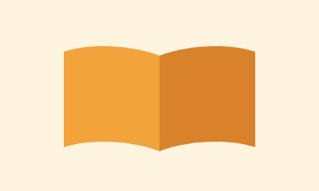

Aprender Juntos

Reforço escolar gratuito em português e matemática para crianças de 6 a 14 anos, com acompanhamento individual e oficinas de leitura.
Como participar
- Seja voluntário como educador(a) ou monitor(a)
- Doe livros e material escolar